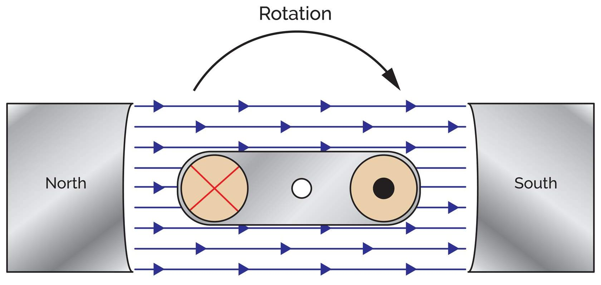
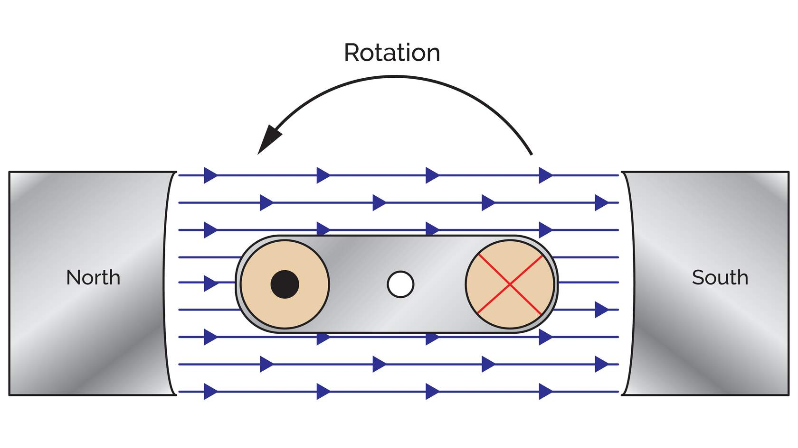

Generator
Principles
A generator converts mechanical energy into electrical energy. The process relies on the relative motion between a conductor and a magnetic field to induce an electromotive force (e.m.f.).
The Prime Mover
To generate electricity, we require a source of rotation. In trade applications across South Australia, this source—the **Prime Mover**—varies depending on the installation:
- >> INTERNAL COMBUSTION (DIESEL/PETROL)
- >> RENEWABLE TURBINES (WIND/WATER)
- >> STEAM TURBINES (THERMAL STATIONS)
Mechanical Rotation → Electrical E.M.F.
Direction of Induced E.M.F.

Clockwise Rotation
Standard loop rotation where the induced current follows the initial polarity established by the field direction (N to S).

Anticlockwise Rotation
By reversing the direction of the prime mover, the direction of the induced e.m.f. in each side of the loop is also reversed.
Determining Polarity
The direction of the induced e.m.f. is not random. It is governed by two fixed physical constraints that every electrician must master:
The direction of the magnetic field—always measured from North to South.
The direction the loop of wire is rotating within that magnetic field.
Apprentices Tip: Fleming's Right-Hand Rule
Use your **Right Hand** for generators: Thumb = Motion, First Finger = Field (N-S), Second Finger = Induced E.M.F.